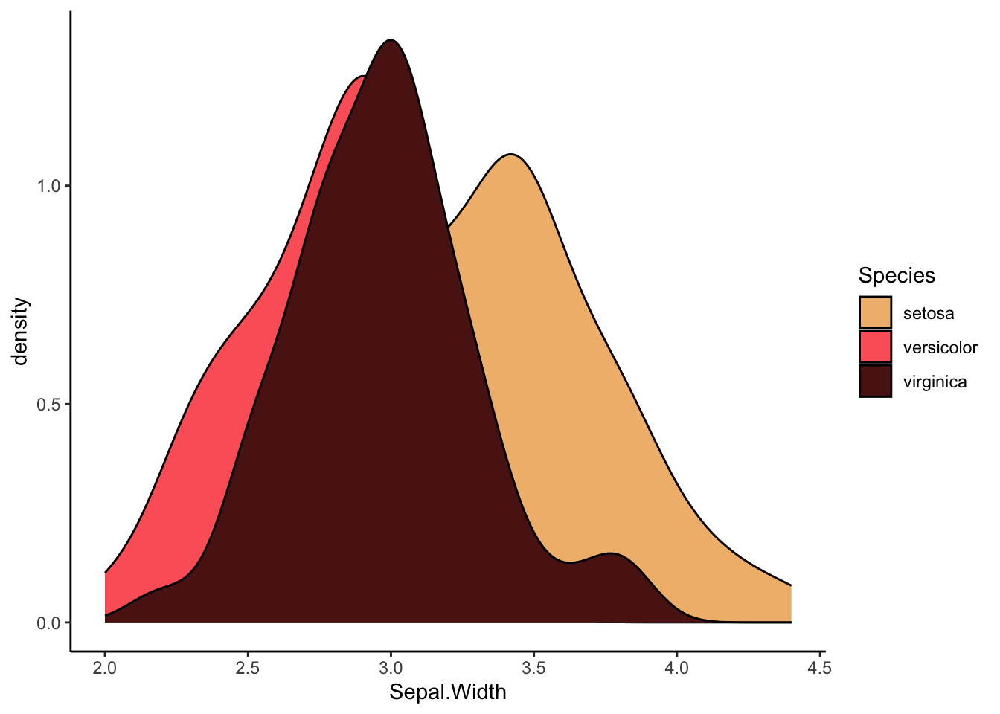

library(tidyverse)
library(rstatix)
palette1 <- c("#648fff","#785ef0","#dc267f","#fe6100","#ffb000","#000000","#ffffff")
palette2 <- c("#CC79A7","#D55E00","#0072B2","#F0E442","#009E73","#56B4E9","#E69F00","#000000")Berichte in Quarto
Berichte in Quarto
Wir haben nun kennengelernt, wie wir mit Hilfe statistischer Analysen Daten mit R auswerten können. Dabei haben wir die Ergebnisse direkt in R ausgewertet - im Output der jeweiligen Chunks. Doch was ist, wenn dir unsere Ergbenisse mit anderen Teilen wollen? Nicht jede:r hat R & R-Studio installiert, und kann ganz einfach unsere .qmd Dateien öffnen. Daher ist es wichtig, sich mit dem Bereitstellen von wissenschaftlichen Ergebnissen zu beschäftigen.
Zwar haben wir in der ersten Sitzung kurz kennengelernt, wie Quarto mit seinen Chunks & HTML Output funktioniert, diese Sitzung soll allerdings dazu dienen, dieses Wissen zu festigen. Dabei wollen wir verschiedene Möglichkeiten zeigen, wie wir Ergebnisse in verschiedener Art und Weise vermitteln können. Dabei ist die Art der Darbietung, auf die wir uns fokussieren html. Zwar ist der Export in .docx und .pdf ebenfalls möglich, diesen wollen wir aber euch aber nur zum Schluss kurz zeigen.
Spotlight Chunk Options
Wir haben bereits kurz kennengelernt, was die Options zu Beginn eines Chunks (bspw. #| eval: false ) bewirken. Das wollen wir uns nun nochmal genauer anschauen.
Packages & Quarto-Rendering
Ihr solltet mittlerweise wissen, wir ihr Packages sowohl installiert als auch aktiviert. Doch was ist, wenn ihr euer Quarto Dokument für die Übergabe bspw. an eine Dozentin/Vorgesetzte rendern wollt?
Frage: Wir würdet ihr dann vorgehen?
Antwort: Das Dokument rendern!
Hierbei kann es passieren, dass Quarto beim Rendern bspw. folgende Fehlermeldung schmeißt:
Error: could not find function “%>%”
Etwaige Fehlermeldungen können immer mal passieren, und zu Anfang ganz schön für Verwirrung sorgen.
Frage: Was ist hier passiert?
Antwort: WIr haben vergessen, alle Packages zu aktivieren
Da wir das package dplyr, in dem der Pipe-Operator %>% vorhanden ist, nicht aktiviert haben, weiß Quarto nicht, wie es diesen interpretieren muss. Dabei ist es auch egal, ob ihr das entsprechende Package in euer laufenden R-Session bereits aktiviert habt: Wenn es um das Rendern geht, könnt ihr jedes Quarto-Dokument als in-sich geschlossenes System betrachten - daher ist es nötig, alle notwendigen Packages zu aktivieren.
Frage: Was für eine Vorgehensweise bietet sich dafür an?
Antwort: Zu Beginn ein “Info-Chunk” definieren.
Daher bietet es sich an, gleich zu Beginn des Dokuments einen Basis “Konfigurations-/Packagechunk” zu erstellen, in dem ihr alle wichtigen Dinge definiert. Die Position ist relevant, da Quarto das Dokument ja von oben nach unten rendert, und somit die Packages zunächst aktiviert werden müssen, bevor deren Funktionen verwendet werden können.
Dieser könnte dann etwa so aussehen:
Natürlich wollen wir nicht immer, dass das dann aber gleich auch das erste ist, was eine potenzielle Rezipientin unseres Berichts sieht.
Frage: Wie können wir sicherstellen, dass dieser Chunk im finalen Bericht nicht angezeigt wird?
Antwort: Wir können zu Beginn in den Chunk Optionen über
#|einstellen, dass er nicht angezeigt (aber ausgeführt) wird.
Perfekt! Wir haben nun alles was wir brauchen, ohne dass man sieht, was wir gemacht haben.
Kurzer Exkurs: Packages : : explizit machen
Es soll vorkommen, dass ein wissenschaftlicher Quarto-Bericht ganz schön lang wird, und über mehrere Wochen/Monate hinweg erstellt wird, bevor er dann gerendert wird. Da kann es sein, dass wir uns gar nicht mehr so gut erinnern können, was wir alles für Packages verwendet haben. Dagegen gibt es zwei Möglichkeiten:
Entweder, ihr aktiviert ganz bewusst jedes mal, wenn ihr ein besonderes Package verwendet (bspw. wesanderson), dieses im jeweiligen Chunk - denn doppeltes Aktivieren von Packages (im Gegensatz zu install.packages() ist erstmal nicht weiter problematisch:
library(wesanderson)Warning: Paket 'wesanderson' wurde unter R Version 4.2.3 erstelltiris %>%
ggplot()+
geom_density(aes(x=Sepal.Width,fill=Species)) +
scale_fill_manual(values=wes_palette("GrandBudapest1",type="discrete"))+
theme_classic()
Ihr könnt Packages aber auch explizit nutzen über den :: Operator. Gleicher Chunk Output wie oben kann dann ohne library() erreicht werden:
iris %>%
ggplot()+
geom_density(aes(x=Sepal.Width,fill=Species)) +
scale_fill_manual(values=wesanderson::wes_palette("GrandBudapest1",type="discrete"))+
theme_classic()
Chunk Options
#| eval
Wir wollen nun die verschiedenen Chunk-Options etwas beleuchten. Fangen wir mit dem relevantesten an, eval. Angenommen, wir wollen uns für den eben benutzten ToothGrowth Datensatz kurz die Summary anschauen, wollen diese aber nicht in unserem Bericht integrieren. Dann können wir das so tun über #| eval: false in der ersten Zeile des Chunks tun. Achtet auf die Leerstelle nach dem | ! RStudio sollte euch hier die versch. Options vorschlagen (bspw. true):
summary(ToothGrowth)Im final gerenderten Dokument sollte der obige Chunk nicht angezeigt sein.
#| include
Je nach Art des Berichts (simples Zeigen der Ergebnisse vs. zeigen der Ergebnisse + Code) kann es sinnvoll sein, auch den Code zu zeigen. Dabei ist es wichtig zu verstehen, dass der Code per default angezeigt wird. Wenn wir nun wollen, dass dieser für einzelne Chunks ausgeblendet wird, können wir #| include: false verwenden:
Natürlich können wir mehere dieser Optionen kombineren (als einzelne Zeilen).
#| output
Manchmal wollen wir auch nur den Code ausführen, ohne die Ergebnisse zu zeigen. Dabei hilft die #| output Option:
summary(ToothGrowth)#| warning
Wenn wir bspw. Packages aktivieren, kann es oft zu Warnungen kommen, welche im finalen Bericht unschön sind. Dabei kann #| warning helfen:
library(dplyr)Manchmal kann es auch sein, dass wir Probleme dabei haben, einen Chunk auszuführen und nicht gleich wissen, wo das Problem ist. Um Dokumente trotzdem zu rendern, gibt es zwei Möglichkeiten: #| error und #| eval :
#| error
Sollte ein error entstehen ohne den Code zu unterbrechen ist das eine gute Wahl:
2+"2"#| eval
2+"2"Außerdem gibt es eine Vielzahl weiterer Optionen für bspw. das Anzeigen von Figures etc. Diese könnt ihr auf posit.co einsehen.
#| results
Ihr könnt auch entscheiden, wie die results aussehen sollen. Manchmal kann es bspw. hilfreich sein, diese so wie sie sind darzustellen. Das könnt ihr über die Option machen:
#| results: asis
Outputs
Tabellen
Im Rahmen der Regression habt ihr das swiss Package kennengelernt. Üblicherweise würden wir uns die Daten zunächst anschauen bzw. wollen, dass unsere Rezipientinnen diese anschauen können. Standardmäßig rendert Quarto Tabellen allerdings etwas unschön:
swissEine Lösung dafür sind die Optionen df-print im YAML Header. Hierfür gibt es die Optionen:
defaultkabletibblepaged
Diese könnt ihr dann entsprechend oben definieren:
---
title: "Berichte in Quarto"
author: "Simon Krukowski"
df-print: paged
---Angenommen, wir wollen das gesamte Ergebnis eines t-Tests direkt berichten. Hierfür bietet sich das rstatix package an, da dieses den Output direkt als tibble speichert. Zeigen wir uns also den t-Test für ToothGrowth an:
ToothGrowth %>%
mutate(dose = as.factor(dose)) %>%
t_test(len ~ supp,var.equal = TRUE)Frage: Probiert die verschiedenen Funktionen aus. Wie unterscheiden sich die Outputs?
Je nach Option solltet ihr nun verschieden-gestylte Tabellen Output sehen. Am besten ihr benutzt die, die euch am besten gefällt.
In-Text Variablen
Manchmal wollt ihr im Fließtext Ergebnisse beschreiben, dabei aber flexibel bleiben und diese nicht “fest” in den Text schreiben. Auch das ist mit Quarto möglich.
Angenommen, wir wollen den Koeffizient für Agriculture unseres eben gerechneten Regressionsmodells im Text beschreiben:
# Erneut rechnen just to be safe
swiss.lm <- lm(Fertility ~ Agriculture + Examination + Education + Catholic, swiss)Über `r können wir (im Source Editor) in-text ausführbaren Code integrieren. Um den Wert zu bekommen, müssen wir folgendes machen:
swiss.lm$coefficients['Agriculture']Agriculture
-0.2206455 Und der finale Satz könnte dann so aussehen:
Für unser Regressionsmodeel ergeben sich die Koeffizienten -0.221 für Agriculture, (…)
Wir sehen also, dass wir auch im Text selbst Variablen anzeigen können.
Statische Figures & Tabellen
Machmal kann es auch vorkommen, dass wir statische Dinge in unseren Bericht integrieren wollen. So könnte man bspw. zur Veranschaulichung von Konzepten Bilder einfügen. Das könnt ihr in RStudio ganz einfach im Visual Editor über das kleine Bild oben machen, und dann entsprechend die Einstellungen anpassen (die Grafik hier wurde natürlich über Quarto/RStudio eingebettet)

Die Einstellungen, die ihr über das GUI eingebt, werden eigentlich nur übernommen und in markdown code überführt, im obigen Fall bspw:
{fig-align="center" width="800"}
Ihr seht, dass wir mit css Keywords die Eigenschaften (e.g., “center) übergeben.
Manchmal kann es auch vorkommen, dass wir Tabellen haben, die wir gar nicht dynamisch erstellt haben, sondern die wir manuell eingeben wollen. Dafür müssen wir natürlich nicht extra ein R-Objekt erstellen, welches wir dann darstellen, sondern wir können es nach folgender Syntax direkt im Text-Teil in Quarto eingeben. Die Syntax sieht wie folgt aus:
| default | left-aligned | right-aligned | centered |
|---------|:-----|------:|:------:|
| student1| 12 | 12 | 12 |
| student2| 123 | 123 | 123 |
| student3| 1 | 1 | 1 |
: Demonstration of pipe table syntaxÜber den : Operator könnt ihr bspw. das alignment innerhalb der Zellen angeben. Solch eine Markdown-Table Syntax kann bspw. über Online Editoren erstellt werden.
So sieht das Ganze dann aus:
| default | left-aligned | right-aligned | centered |
|---|---|---|---|
| student1 | 12 | 12 | |
| student2 | 123 | 123 | 123 |
| student3 | 1 | 1 | 1 |
Ihr könntet diese Dinge aber auch bspw. über den Visual Editor in RStudio lösen.
Überblick behalten
Vielleicht habt ihr beim Rendern bereits eine ähnliche Fehlermeldung bekommen:
error occurred in unnamed-chunk-128 (…)
Falls wir uns nun um diesen Fehler kümmern wollten, so wüssten wir natürlich erstmal nicht, welcher der betroffene Chunk ist. Daher bietet es sich an, die Chunks gleich zu benennen. Dies geht…
{r chunk_name}
…am Anfang des Chunks.
Zitationen
Ihr könnt auch direkt in Quarto zitieren. Dazu müsst ihr lediglich eure Referenzen als .bib vorliegen haben, und diese dann oben im YAML-Header eingeben:
---
title: "Berichte in Quarto"
author: "Simon Krukowski"
df-print: paged
bibliography: "assets/bibliographies/references.bib"
---Ihr könnt auch euer R-Studio mit verschiedenen Bibliotheken (bspw. Zotero) verknüpfen, und dann auf alle Quellen dort zugreifen.
Publikationsbereite Outputs
Manchmal wollen wir direkt aus R unsere Outputs in einem Format haben, das quasi publikationsbereit ist. In Abhängigkeit des wissenschaftlichen Hintergrundes gibt es da natürlich verschiedene Guidelines, wir orientieren uns hier an den für Komedia-Studierende relevanten APA Guidelines.
Angenommen, ihr habt einen Datensatz wie ToothGrowth und wollt diesen im deskriptiven Teil eurer Arbeit berichten. Je nachdem, was ihr in df-print definiert habt, könnte so ein table zwar in Ordnung aussehen:
ToothGrowthSo richtig optimal ist das aber nicht. Hier kann das stargazer() package sehr hilfreich sein. Schauen wir uns eine solche Tabelle für das attitude dataset an. Dabei ist die Chunk-Option #| results: asis.
stargazer::stargazer(attitude,type = "html")| Statistic | N | Mean | St. Dev. | Min | Max |
| rating | 30 | 64.633 | 12.173 | 40 | 85 |
| complaints | 30 | 66.600 | 13.315 | 37 | 90 |
| privileges | 30 | 53.133 | 12.235 | 30 | 83 |
| learning | 30 | 56.367 | 11.737 | 34 | 75 |
| raises | 30 | 64.633 | 10.397 | 43 | 88 |
| critical | 30 | 74.767 | 9.895 | 49 | 92 |
| advance | 30 | 42.933 | 10.289 | 25 | 72 |
Frage: Was fällt auf?
Über die Option summary = FALSE könnt ihr summaries ausschalten, bspw. wenn ihr eh eine Ergebnistabelle aus einem T-Test habt:
ToothGrowth %>%
mutate(dose = as.factor(dose)) %>%
t_test(len ~ supp,var.equal = TRUE) %>%
stargazer::stargazer(type = "html",summary = F)| .y. | group1 | group2 | n1 | n2 | statistic | df | p | |
| 1 | len | OJ | VC | 30 | 30 | c(t = 1.91526826869527) | c(df = 58) | 0.0604 |
Und was ist mit komplexeren Modellen oder Regressionen? Hier kann die manuelle Darstellung sehr aufwändig sein. Aber auch hier lässt uns stargazer() nicht im Stich:
swiss.lm %>% stargazer::stargazer(type="html")| Dependent variable: | |
| Fertility | |
| Agriculture | -0.221*** |
| (0.074) | |
| Examination | -0.261 |
| (0.274) | |
| Education | -0.962*** |
| (0.195) | |
| Catholic | 0.124*** |
| (0.037) | |
| Constant | 91.055*** |
| (6.949) | |
| Observations | 47 |
| R2 | 0.650 |
| Adjusted R2 | 0.616 |
| Residual Std. Error | 7.736 (df = 42) |
| F Statistic | 19.482*** (df = 4; 42) |
| Note: | p<0.1; p<0.05; p<0.01 |
Und LaTeX?
Solltet ihr mit LaTeX bspw. über Overleaf arbeiten, so ist stargazer sogar noch besser geeignet. Die default Einstellung ist, euch den entsprechenden LaTeX geben:
swiss.lm %>% stargazer::stargazer()
% Table created by stargazer v.5.2.3 by Marek Hlavac, Social Policy Institute. E-mail: marek.hlavac at gmail.com
% Date and time: Mi, Jun 21, 2023 - 10:19:46
\begin{table}[!htbp] \centering
\caption{}
\label{}
\begin{tabular}{@{\extracolsep{5pt}}lc}
\\[-1.8ex]\hline
\hline \\[-1.8ex]
& \multicolumn{1}{c}{\textit{Dependent variable:}} \\
\cline{2-2}
\\[-1.8ex] & Fertility \\
\hline \\[-1.8ex]
Agriculture & $-$0.221$^{***}$ \\
& (0.074) \\
& \\
Examination & $-$0.261 \\
& (0.274) \\
& \\
Education & $-$0.962$^{***}$ \\
& (0.195) \\
& \\
Catholic & 0.124$^{***}$ \\
& (0.037) \\
& \\
Constant & 91.055$^{***}$ \\
& (6.949) \\
& \\
\hline \\[-1.8ex]
Observations & 47 \\
R$^{2}$ & 0.650 \\
Adjusted R$^{2}$ & 0.616 \\
Residual Std. Error & 7.736 (df = 42) \\
F Statistic & 19.482$^{***}$ (df = 4; 42) \\
\hline
\hline \\[-1.8ex]
\textit{Note:} & \multicolumn{1}{r}{$^{*}$p$<$0.1; $^{**}$p$<$0.05; $^{***}$p$<$0.01} \\
\end{tabular}
\end{table}